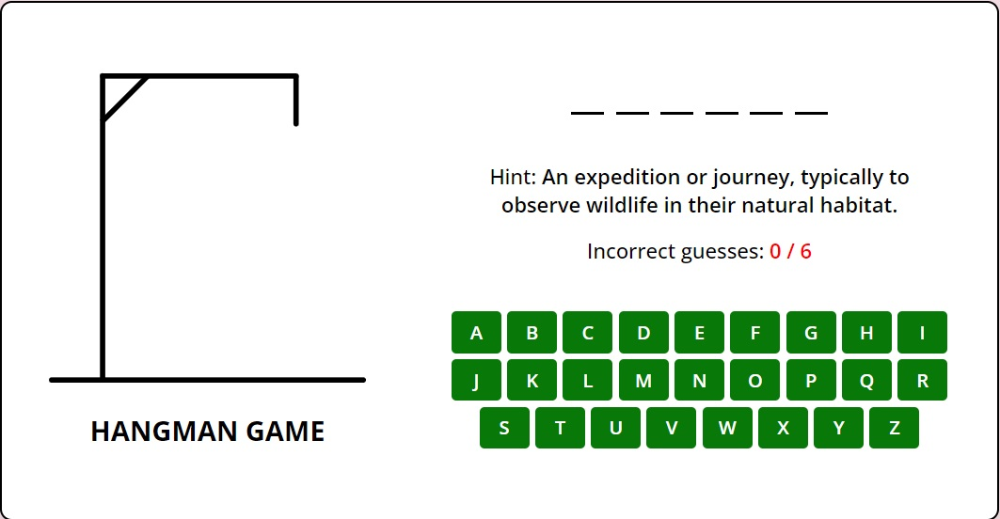

Memory Card

Enhance your memory with our Memory Card game. Challenge yourself by matching pairs of cards with identical images. Start with all cards face down and flip two at a time to uncover matches. Perfect for improving short-term memory and attention to detail.
Typing Speed Test

Measure and improve your typing skills with our Typing Speed Test. The game tracks your Words Per Minute (WPM) and Characters Per Minute (CPM), providing a fun and competitive way to enhance typing accuracy and speed over a 60-second challenge.
Hangman
Test your vocabulary and spelling skills with Hangman. Guess letters to fill in the blanks for a hidden word before the drawing of a hangman is completed. Each incorrect guess brings the hangman closer to completion. Can you save him in time?
Word Scramble

Put your word recognition to the test with Word Scramble. Given a set of scrambled letters, your task is to rearrange them to form a word related to the provided hint. It's a race against the clock with only 30 seconds to unscramble each word!